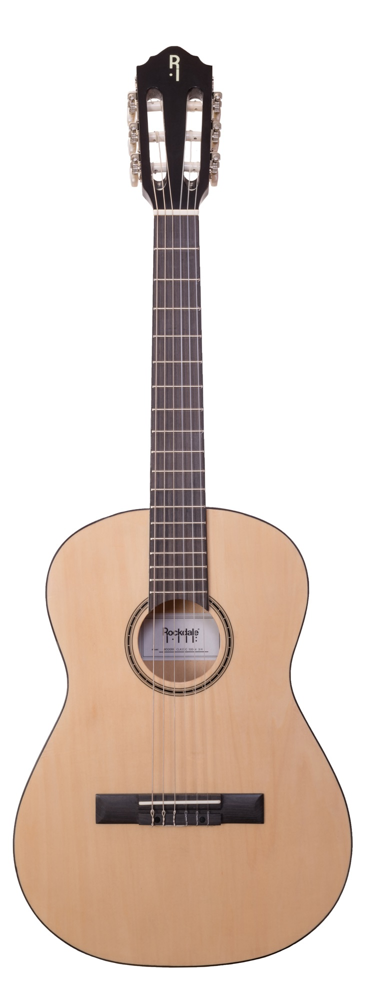

Гитара
Гита́ра — струнный щипковый музыкальный инструмент. Применяется в качестве аккомпанирующего или сольного инструмента во многих стилях и направлениях музыки, среди которых романс, блюз, кантри, фламенко, рок, джаз. Изобретённая в XX веке электрическая гитара произвела значительные изменения в музыке и тем самым оказала сильное влияние на массовую культуру. Также есть классическая гитара, гитара фламенко, испанская гитара и некоторые другие виды.
Справочник гитар с сайта Muztorg.ru
| Название | Тип | Иконка | Цена |
|---|---|---|---|
| FLIGHT F-230C NA | Акустическая |  | 11 360 |
| ROCKDALE Aurora D1 C BK | Акустическая |  | 7 700 |
| IBANEZ GRG121DX-BKF | Электрогитара |  | 23 000 |
| IBANEZ GRX70QA-TRB | Электрогитара |  | 22 400 |
| FENDER SQUIER Affinity 2021 Stratocaster HH LRL Olympic White | Электрогитара |  | 37 000 |
| VESTON C-45A BK | Классическая |  | 6 620 |
| Denn DCG390 | Классическая |  | 4 667 |
| ROCKDALE Modern Classic 100-N 3/4 | Классическая |  | 5 523 |